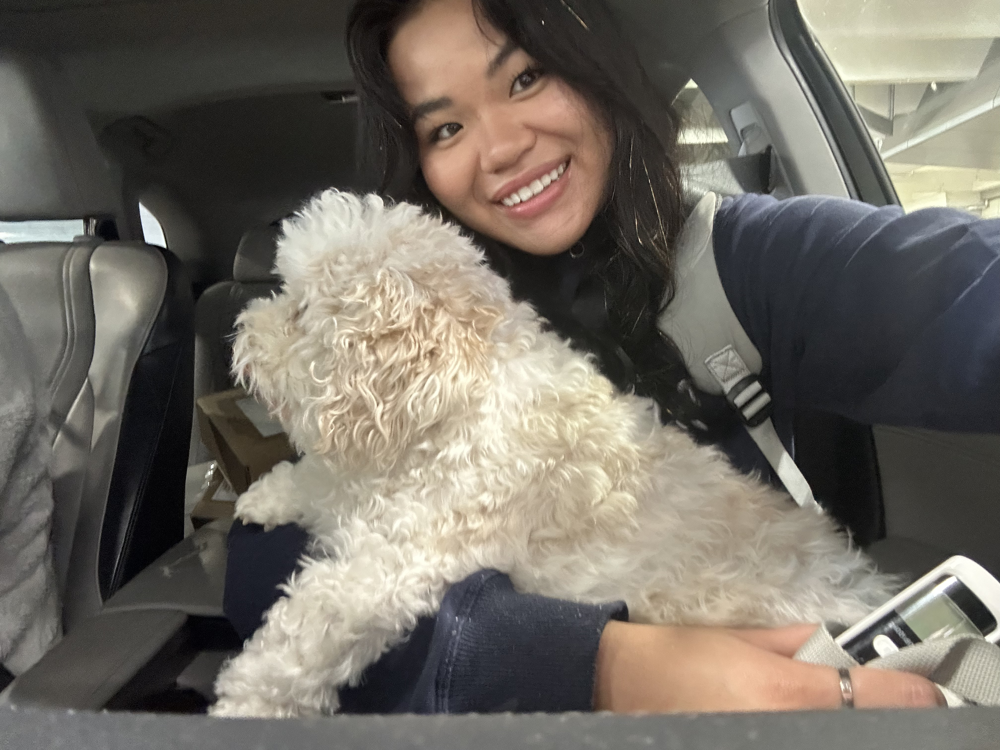
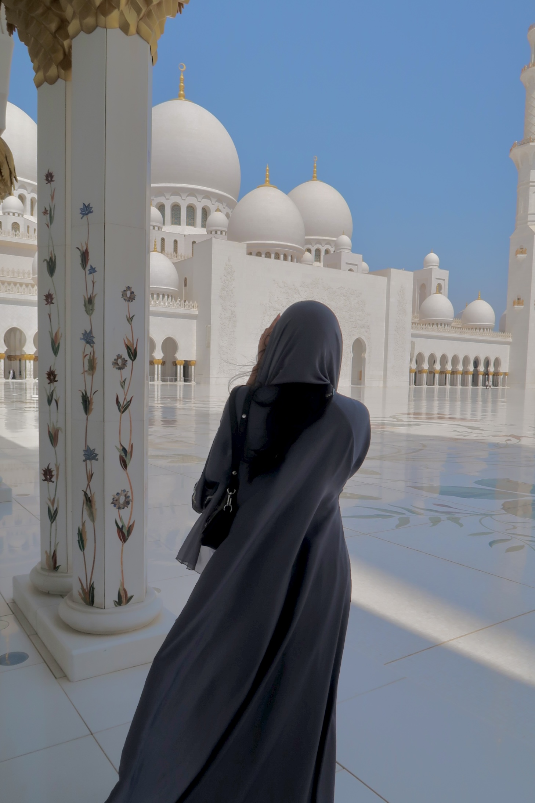
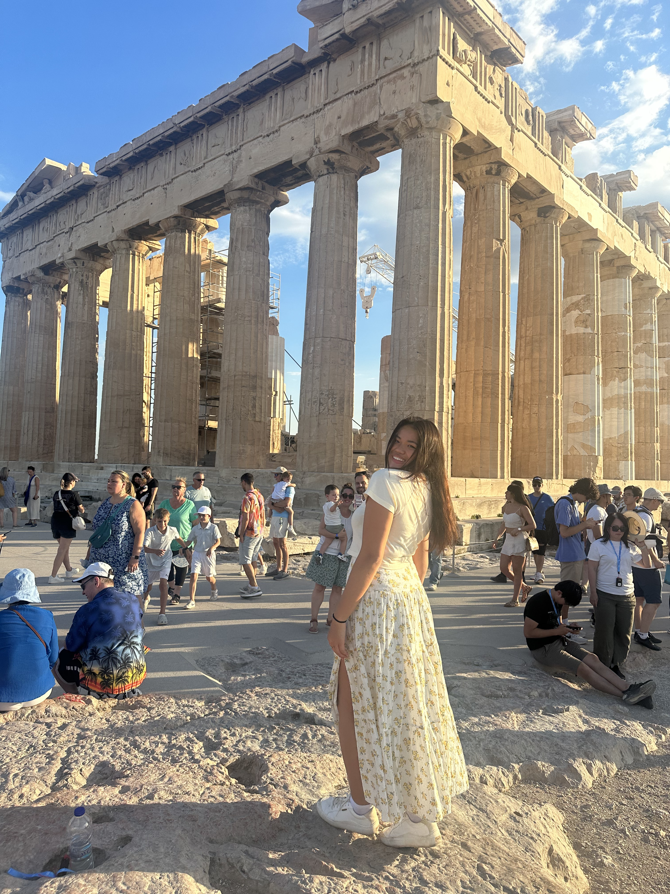

<div class="textcontainer">
<div style="text-align:center; margin-top:40px;">
<h3 style="color:white;">About Me!</h3>
<img src="./FDOC.jpg" style="max-width:600px; width:100%; height:auto;">
<p class="caption" style="color:white;">Here is a picture of my friends and I (in the middle) on Widener steps celebrating our last first day of classes.</p>
</div>
<h3>Hi! Thanks for visiting my website. My name is Katie Le and I am a current senior at Harvard studying bioengineering on the electrical track. I have an interest in medical devices and biotech. I am from Columbus, Ohio and am a huge OSU fan (go Bucks!) . When I am not in the lab, I enjoy hanging out with my friends, traveling— I’ve been lucky enough to visit over 20 countries-and going on walks with my dog named Lucky (aka the Luckster).</h3>
<p class="margin"> </p>
<div class="center-row" style="flex-direction:column; align-items:center;">
<h3 style="color:white; text-align:center;">The Luckster 🍀</h3>

<p class="caption" style="color:white;">Here is a picture of me and my dog, the Luckster. He is a Cavachon (mix of Cavalier and Bichon Frise). He is very loyal and will follow you everywhere (whenever you have food). </p>
</div>
<div style="text-align:center; margin-top:40px;">
<h3 style="color:white;">Travel ✈️</h3>

<p class="caption" style="color:white;">One of my favorite activities I did over the summer was exploring mosques in Abu Dhabi. They are huge and breathtakingly beautiful.</p>
</div>
<div style="text-align:center; max-width:600px; margin:auto;">

<p class="caption" style="color:white; font-style:normal;">
Another destination that has a special place in my heart is Greece. I had the amazing opportunity to conduct research in Greece during my junior year. Here is me at the Acropolis.
</p>
</div>
<div style="text-align:center;">
<video width="640" height="480" controls>
<source src="viet.mp4" type="video/mp4">
</video>
<p class="caption" style="font-size:17px; font-style:normal; color:white;">
One of my favorite countries to visit is Vietnam because I am Vietnamese. Here is a video of the Golden Hand Bridge in Bà Nà Hills.
</p>
</div>
</div>